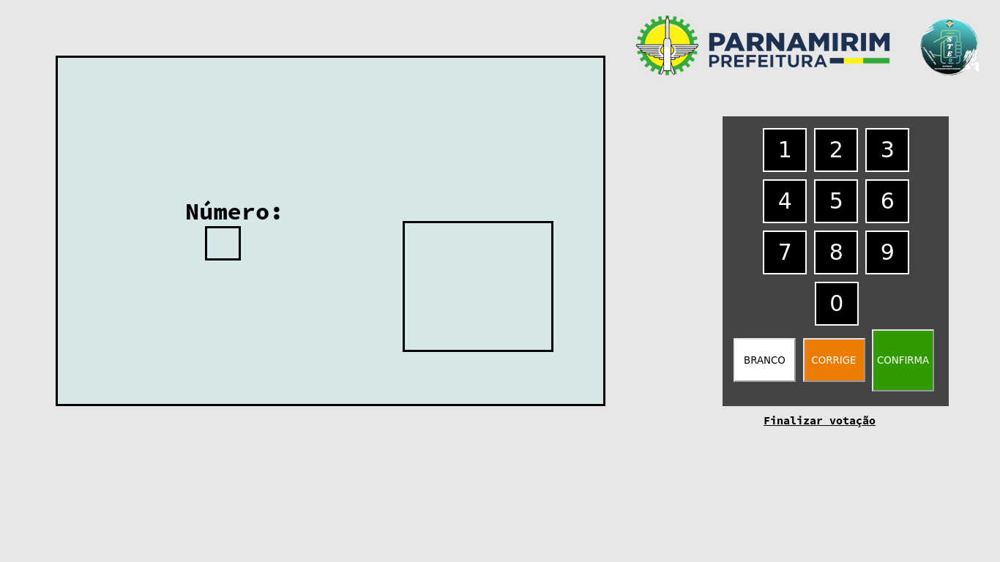
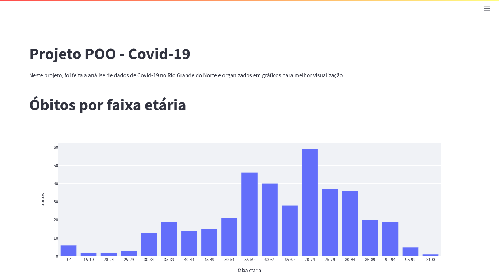

Sobre Mim
Sobre Mim
 Projetos
Projetos
Um projeto que fiz para ajudar na votação de professores das escolas públicas de Parnamirim/RN.
Clique na foto para acessar a urna.
Ou em mim para ver o repositório
Um pequeno projeto que reúne os casos de Covid-19 com Python.
Clique na foto para interagir com os gráficos
Ou em mim para ver o repositório
amigao.js
Um menu simples de restaurante em JS.
Clique no botão para iniciar.
Ou em mim para ver o
repositório
Um jogo educativo sobre matemática para o 4 ano. Clique na foto para jogar.
Ou em mim para ver o repositório